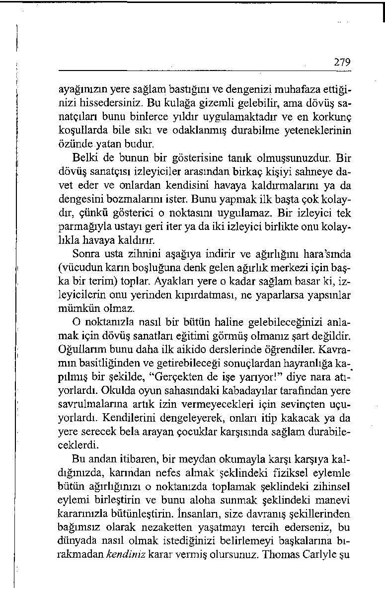

“Seven bir yürek en hakiki bilgeliktir.”
- CHARLES DICKENS
Hawaii adasında yaşayanlar iyi niyeti kendilerine özgü bir şekilde tarif ederler, onu aloha diye adlandırırlar. Hawaii’de genellikle içten bir selamlama ve yolcu etme sözcüğü olarak kullanılan aloha, başkalarının iyiliği için bencil olmayan, diğerkâm bir kaygı anlamına gelir. Aloha koşulsuz sevgi demektir.
Marie Curie şuna inanırdı: “Bireyleri geliştirmeden daha iyi
bir dünya inşa etmeyi umamazsmız. Bunun için her birimizin,
hem kendisini geliştirmek için çaba harcaması, hem de bütün
insanlık için genel bir sorumluluk duyması gerekir. Kendileri
için daha yararlı olabileceğimizi düşündüğümüz insanlara yardımcı olmak görevimiz olmalıdır.”
Kendisini içi geçmiş bir otobüs sürücüsü olarak tarif eden
Mae, benim Tongue Fu seminerime parasını kendi cebinden
ödeyerek katılmıştı. Emekliliği gelinceye kadar daha üç sene
bu işi götüremeyeceğine inanıyordu. “Bu seminere ihtiyacım
var” demişti, “artık dayanamıyorum, para bozmamızın mümkün olmadığı orada koskoca harflerle yazılı olmasına rağmen, insanların benden para üstü istemesinden bıktım usandım.
275
Trafikin en kalabalık olduğu saatte, adamın biri burnuma bir
harita uzatıp bana gitmek istediği yeri gösterip nerede inmesi
gerektiğini soruyor. Sırt çantalarını ve çocuk arabalannı otobüslere almamız yasak; bunlara izin vermeyince insanlar öfkelerini benden çıkarıyor. Gençler, o büyük müzik kutularının sesini kısmalarını istediğimde, bana ağızlarını geleni söylüyorlar. Ne yapabilirim? Otobüsler hayvanat bahçesinden farksız.”
Seminerin sonuna doğru, Victor Frankl’ın felsefesinden ve
Pygmalion İlkesinden söz ettikten sonra, bu belediye işgöreni
söz alıp şunları söyledi: “Aloha ruhunu tam olarak ne zaman
yitirdiğimi hatırlamıyorum, ama şu anda gelmiş olduğum durumdan hiç memnun değilim. Fakat yolcuların kabalıklarına nasıl son vereceğimi artık biliyorum. Yapmam gereken tek şey, onlara kaba davranmaya son vermektir.”
Mae, eksik olmasın, daha sonra bana kaydettiği ilerlemeyi
anlatan bir mektup yazdı. “Eskiden sabahları işe zorla, istemeye istemeye giderdim. Şimdi bir an önce işe başlamayı gözlüyorum. Sabahları göreve giderken artık boynuma bir çiçek çelengi takıyorum ve gün içinde bu çiçekleri işine yarayacak gibi görünen birisine hediye ediyorum. Dün, çiçekleri her zaman otobüse tek başına binen yaşlı bir bayanın boynuna taktım.
Bunun üzerine, yıllardır kendisine çiçek veren hiç kimse olmadığını, kendisini “Bir Günlük Kraliçe” gibi hissettiğini söyledi. Çelengimi önceki gün de bir Japon çifte armağan ettim.
Çok sevinen çift bir başka yolcudan, ‘otobüs sürücüsü sevimli bayanla’ birlikte bir resimlerini çekmesini rica ettiler. Bu çe-lenkler benim sembolüm haline geldi. Bana alohayla davranmam gerektiğini hatırlatıyorlar; ve biliyorsun, insan bunun karşılığını alıyor.”
Bu bayan otobüs şoförünün heyecanla keşfetmiş olduğu gibi, insanların size davranış tarzını değiştirmenin en iyi yolu kendi davranış tarzınızı değiştirmektir. Aloha sunmayı tercih etmesi, hem kendi dünyasını hem de temas ettiği öteki insanların dünyasını zenginleştirmiştir.
276
Bir İyilik Kozası Oluşturmak
‘‘Kalite arzu ediyorsanız, ona sahipmişsiniz gibi davranın. - mış
gibi’ teknikini deneyin.”
- WILLIAM JAMES
Böyle bir iyilikseverlik ruhuna ulaşamayacağınızı mı düşünüyorsunuz? Ünlü Nike reklamında dendiği gibi, “Sadece yapın!”
Davranışlarınızın “münasebetsiz mi, yoksa hoş mu” oldu ğunu görmek için ilk başta kontrol etmeye çalışmaktan başka
bir yol yoktur. Eğer söylemek ya da yapmak üzere olduğunuz
şey başkalarına karşı soylu bir tutum içermiyorsa, o zaman en
iyisi susun. Yüce gönüllülük, gönül zenginliği, duygu asaleti
ve ruh cömertliği sıkıntılara soğukkanlılıkla göğüs germeyi
mümkün kılar, adiliğe ve intikamcılığa tenezzül etmemeyi getirir ve değerli amaçlar için özveride bulunmayı sağlar.
Bu sözleri lütfen bir kere daha okuyun. Çünkü bunlar lo n gue Fu’nun esasını özetlemektedir. İyiliksever olmayan kavramları kişisel felsefenizden uzaklaştırmaya karar verin. “İyi olmayı tercih ediyorum” ya da “Soğukkanlı ve sevecen olaca ğım” diyerek, intikamcı tepkilerin kökünü kurutun. Kindar
duygulara kapılmak yerine, aklınızı nasıl davranmak istediğinize yöneltin.
Bir yoga öğretmeni iç huzura ulaşmak için ‘-mış gibi’ teknikini kullanmaktadır. Çevresine huzurlu ve sakin bir ruh hali yansıtan bu bayan, kendisine gurusunu (bilge öğretmen, sözlük anlamı “daha önce doğmuş olan”) model almaktadır. Anlattığına göre, ne zaman sıkıntıya düşerse, kendisine gurusu-nun böyle bir durumda nasıl davranacağını sormakta ve ona göre davranmaktadır. Gurusu hiçbir zaman sinirlenmemekte,
her zaman ruhu kötülüklerden arınmış gibi durmaktadır. Ruhu
kötülüklerden arınmış demek, rahat görünmek, düşünceli ve
özenli bir izlenim vermek, iyiliksever bir mizaç sergilemek
277
demektir. Yoga öğretmeni bayan gurusunu örnek alarak felsefesini böyle bir mizaç üzerinde kurmaya karar vermiş.
Takdir ettiğiniz bir kişiyi kendinize örnek almak, bir beceriyi hızla kazanmanın zamanın sınavından geçmiş bir yoludur.
Yogi Berra şöyle der (zaten bunu başkası diyemezdi): “Sadece
bakarak birçok şey gözlemleyebilirsiniz.” iyilik timsali birisini gözleyerek birçok şey öğrenebilirsiniz. Ateş altında soğukkanlılığını koruyabilen tanıdığınız kimler var? Zor bir durumda kaldığınızda onların yaklaşımını benimseyin ve onların davranacağı gibi davranın.
Ki’nizi Geliştirin
“Batı uygarlığı hakkında ne düşünüyorsunuz? ”
- MUHABİRİN SORUSU
“Sanıyorum, iyi bir fikir.”
- MAHATMA GANDİ’NÎN YANITI
Atölye çalışmalarımızdan birinde bir mühendis söz alıp şunları söyledi: “Bunlar bana göre biraz New Age’ciliği andırıyor.
Kan basıncımızın kaynamasına imkân vermeyecek pratik yöntemleriniz yok mu hiç?”
İyi bir soru. Yoga öğrenmek, meditasyon yapmak ve aikido
hafif dövüş sanatını öğrenmek barışçı bir ruh hali geliştirmek
için mükemmel yollardır. Kaos anlarında soğukkanlılığınızı
muhafaza etmenize yardımcı olacak iki özel teknik daha vardır.
Şu sözü duymuşsunuzdur: “Ruhunuz kısa kalıyorsa uzun
bir yürüyüşe çıkın.” Ruhunuz sıkışmışsa ve uzun bir yürüyüşe
çıkamıyorsanız derin bir nefes alın. Düzensiz ve sığ nefes almak panikleme getirir, kafa karıştırır. Yoga ustaları ve dövüş
sanatçıları ritmik ve derin nefes almayı öğrenerek ki’lerini ve
ruh hallerini kontrol altında tutarlar. Nefessiz kalırlarsa neşelerini yitireceklerini ve kontrolü kaybedeceklerini bilirler.
278
Her gün beş dakika yoğun alıştırma yaparak karnınızdan
solumayı öğrenebilirsiniz. Sakin bir yer bulun ve dikkatinizi
çekebilecek şeyleri çevrenizden uzaklaştırın. Bütün dikkatinizi hava alıp vermeniz üzerinde yoğunlaştırın. Havayı burnunuzdan içinize çekerken oksijeni dörde kadar sayıp karnınıza doldurun. Sonra, aikido ustası Tohei’nin tavsiye ettiği gibi, “nefesinizi öyle dışarı verin ki cennetin sahillerine gitsin. İlk
başta rahatsız olabilirsiniz, ama bu alıştırmayı yapmaya devam
ederseniz, kendi bedeninizi unutacağınız ve soluk alıp verme
dışında hiçbir şeyin olmadığı, huzur dolu bir dünyaya adım
atacağınız bir aşamaya ulaşırsınız.”
Bunun tehdit edici bir durumla karşılaştığınızda size nasıl
yardımcı olacağını mı düşünüyorsunuz? Karından nefes almak, doğal kaç ya da dövüş tepkisine karşı koyan elle tütülür bir araçtır. Törenleştirilmiş nefes alma sizi fiziksel (nabzınız ve kan basıncınız düşer) ve zihinsel (zihniniz durulur ve sakinleşir) olarak gevşetir. Eğer kuşku duyuyorsanız, bir kere deneyin. Korkunuzdan başka kaybedeceğiniz bir şey yok.
O Noktanızda Bir Bütün Haline Gelin
"Herkes huzuru kendi içinde bulmalıdır. Ve bunun gerçek bir huzur olması için dış koşullardan etkilenmemesi gerekir.”
- MAHATMA GANDİ
Dövüş sanatçıları “kafalarının içinde” olurlarsa, kafalarının
karışacağını ve istikrarsızlaşacaklarım bilirler. Saldırıya uğradıklarında enselerinin üzerinden tepki gösterirlerse zihinsel ve fiziksel bakımdan dengelerini kaybederler ve daha güçlü kuvvetler karşısında zayıf kalırlar.
Bunun yerine, bilinçlerini aşağıya indirmeyi ve “karınlarından düşünmeyi” öğrenirler. En eski zamanlardan beri karın boşluğu - o nokta olarak da adlandırılır - gerçek insan gücünün doğduğu yer olarak kabul edilir. O noktanızı korursanız, 
279
ayağınızın yere sağlam bastığını ve dengenizi muhafaza ettiğinizi hissedersiniz. Bu kulağa gizemli gelebilir, ama dövüş sanatçıları bunu binlerce yıldır uygulamaktadır ve en korkunç koşullarda bile sıkı ve odaklanmış durabilme yeteneklerinin özünde yatan budur.
Belki de bunun bir gösterisine tanık olmuşsunuzdur. Bir
dövüş sanatçısı izleyiciler arasından birkaç kişiyi sahneye davet eder ve onlardan kendisini havaya kaldırmalarını ya da dengesini bozmalarını ister. Bunu yapmak ilk başta çok kolaydır, çünkü gösterici o noktasını uygulamaz. Bir izleyici tek parmağıyla ustayı geri iter ya da iki izleyici birlikte onu kolaylıkla havaya kaldırır.
Sonra usta zihnini aşağıya indirir ve ağırlığını hara’smda
(vücudun karın boşluğuna denk gelen ağırlık merkezi için başka bir terim) toplar. Ayakları yere o kadar sağlam basar ki, izleyicilerin onu yerinden kıpırdatması, ne yaparlarsa yapsınlar mümkün olmaz.
O noktanızla nasıl bir bütün haline gelebileceğinizi anlamak için dövüş sanatları eğitimi görmüş olmanız şart değildir.
Oğullarım bunu daha ilk aikido derslerinde öğrendiler. Kavramın basitliğinden ve getirebileceği sonuçlardan hayranlığa ka-_
pilmiş bir şekilde, “Gerçekten de işe yarıyor!” diye nara atıyorlardı. Okulda oyun sahasındaki kabadayılar tarafından yere savrulmalarına artık izin vermeyecekleri için sevinçten uçuyorlardı. Kendilerini dengeleyerek, onları itip kakacak ya da yere serecek bela arayan çocuklar karşısında sağlam durabileceklerdi.
Bu andan itibaren, bir meydan okumayla karşı karşıya kaldığınızda, karından nefes almak şeklindeki fiziksel eylemle bütün ağırlığınızı o noktanızda toplamak şeklindeki zihinsel eylemi birleştirin ve bunu aloha sunmak şeklindeki manevi
kararınızla bütünleştirin. İnsanları, size davranış şekillerinden
bağımsız olarak nezaketten yaşatmayı tercih ederseniz, bu
dünyada nasıl olmak istediğinizi belirlemeyi başkalarına bırakmadan kendiniz karar vermiş olursunuz. Thomas Cariyle şu
280
sonuca varmıştı: “İyiden yana manevi bir kuvvet olma kararlılığınız, bütün karşılaşmalarınızı olumlu bir şekilde etkileyecek ve her günkü yaşamınıza çok daha fazla neşe katacaktır.”
İNSANLARI NEZAKETTEN YAŞATMAK
İÇİN EYLEM PLANI
Apartmanınızdaki huysuz bir bayan dünyaya küsmüş gibidir. Ters
tavırlarını kaldırmak size oldukça zor gelmektedir ve bazen içinizden suratına çenesini kapatmasını haykırmak gelmektedir. Mümkün olduğu kadar yoluna çıkmamaya çalışıyorsunuz, ama zaman zaman asansörde ya da koridorda kaçınılmaz olarak kendisine rastlıyorsunüz. Bu (Çicero’nun deyimiyle) “kötü huylu” kişiye nasıl davranmayı tercih edersiniz?
UNUTMANIZ GEREKEN